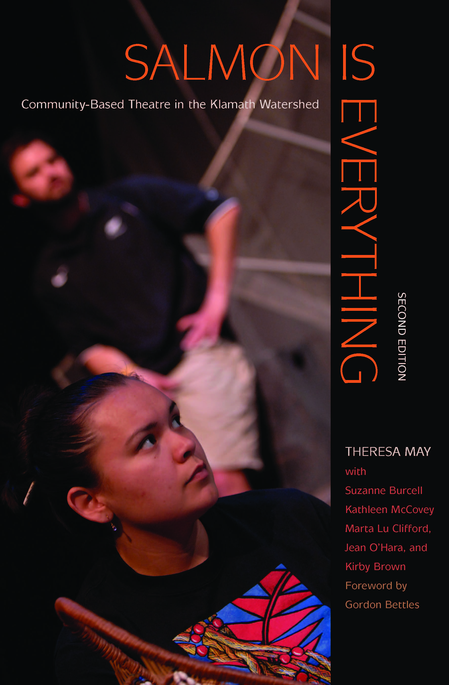

Salmon Is Everything is a community-based theater project that was developed by Theresa May and members of the Yurok, Hoopa Valley, and Karuk Tribes in response to the historic and devastating fish kill on the Klamath River in 2002. The fish kill, which resulted in the premature death of more than 30,000 salmon, had a devastating impact on the tribal communities who live along the Lower Klamath River, as salmon plays a central cultural and spiritual role in every aspect of their lives. After the fish kill, theatre artist Theresa May worked with Native faculty, staff students, and community members at Humboldt State University and throughout the Klamath Watershed to develop a play that would give voice to the importance of salmon in tribal life. Salmon Is Everything follows three fictionalized families that represent the different communities affected by the 2002 drought and subsequent fish kill: an upper Klamath ranching family, a Karuk-Yurok family, and an environmentalist and her partner caught in the middle of the conflict. The script of the play is accompanied by essays by artists and collaborators that illuminate the process of creating and performing theatre on Native and environmental issues. The book was first published in 2014, but a second edition was later published in 2018; the second edition included the version of the play that had been revised to highlight a stronger Klamath-Modoc perspective during its second production at University of Oregon, as well as a new introduction by the author and two new chapters, which reflected both the UO production of the play and how the play was being used in a pedagogical context.
Salmon Is Everything is a text that complicates the definition of Oregon literature in many ways. It provokes questions of what it truly means to be from a place, who gets to exist in a place, and what happens when a place undergoes a shocking tragedy that affects several different communities. In the context of this guide, Salmon Is Everything inhabits a far “messier,” less clear definition of Oregon literature than other texts. Much of the book and the play itself take place in California, not Oregon, and all sense of place within the book is primarily defined by the Klamath River. I think that this demonstrates something essential: a place is not necessarily something that ends at a border, particularly not for those who have been inhabiting that place since long before the borders delineating “Oregon” and “California” existed. To fully represent Oregon, it is necessary to also represent the Indigenous communities and voices who have a sense of place beyond the state lines that were imposed upon them, and to consider how stories and communities transcend boundaries. In Salmon Is Everything, it is the river that matters; all of those who live along and depend upon it inhabit the same place, regardless of what town or state they might live in.
Salmon Is Everything is also messy in how it inhabits the category of "literature." The book is simultaneously a work of nonfiction and a dramatic text, and one learns just as much about the story of creating the play as one does about the play itself. There is no single author; although Theresa May is officially listed as the book’s “author,” she makes it immediately clear that this was a collaborative project brought into existence by a community, not by a single person. Within the play itself, footnotes are used to denote precisely where and from whom each story and idea came from, which reflects Indigenous traditions of community-based oral storytelling where stories never belong to a single person. Often, the play itself reflects the process of creating it, with many plot elements mirroring the real-life experiences of the Indigenous students (mostly women) who were involved in writing and eventually performing it. One of the students involved in creating the play, Lauren Taylor, was empowered by her involvement with the play to be the first Yurok individual from the Lower Klamath to speak at a stakeholder session intended to encourage open dialogue and conflict resolution between those involved in watershed issues. Taylor’s experience of both speaking to the perspectives of Lower Klamath tribes and later connecting with those on the “other side”—farmers, ranchers, government officials, et cetera—was then able to serve as an example of the sort of dialogue between communities that May was attempting to portray in the play. Through this example, and many others, Salmon Is Everything served as both a reflection of reality and as a tool to induce change.
While Salmon Is Everything focuses on a single event in a single watershed, the reality is that there are countless Native communities across Oregon that have experienced profound and traumatic loss of their land, culture, and community in a similar way to those depicted in the play. I feel that Salmon Is Everything, both the play itself and the process of creating it, serves an example of how stories can be used to encourage empathy and induce change within a community, and to show people how they might begin to grapple with decades of division and loss in order to move toward a more unified and equitable future.
Theresa May is a theatre-maker, director, playwright and scholar whose work focuses on environmental justice and indigenous issues. She is currently a Professor of Theatre Arts and allied faculty of Indigenous and environmental studies at the University of Oregon. In Salmon Is Everything, May is honest about her experience as a white professor working with Indigenous faculty, students, and community members, and explains in detail how she learned from and listened to those whose stories she was trying to uplift.
Jared D. Aldern and Theresa Lynn Gregor, Landkeeping: Restoring Indigenous Fire Stewardship and Ecological Partnerships (2026)
Lara A. Jacobs, Indigenous Critical Reflections on Traditional Ecological Knowledge (2025)
R. D. K. Herman, Giving Back: Research and Reciprocity in Indigenous Settings (2018)
Jim Lichatowich, Salmon, People, and Place: A Biologist's Search for Salmon Recovery (2013)
